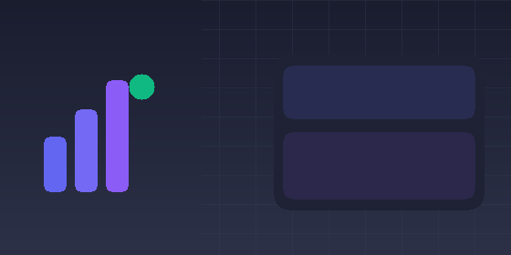
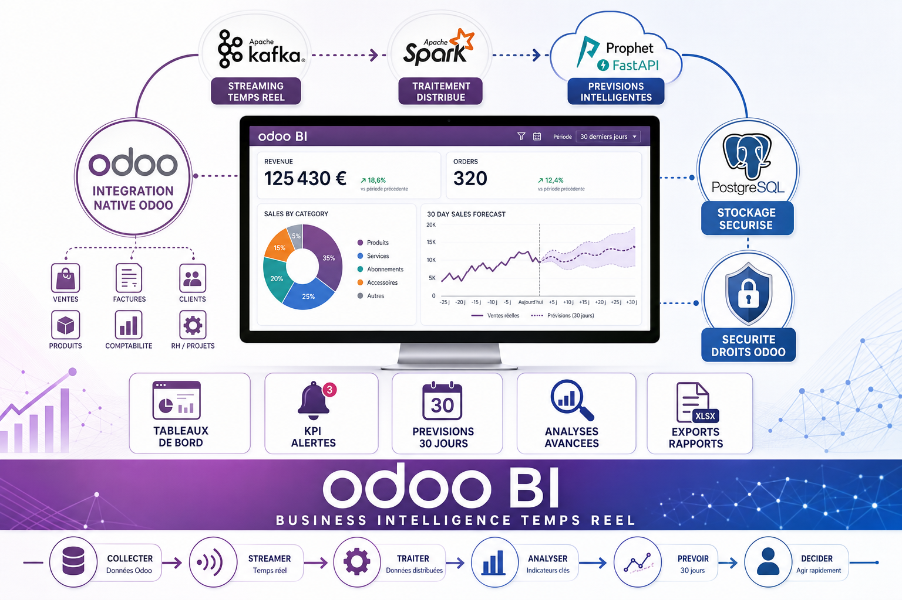
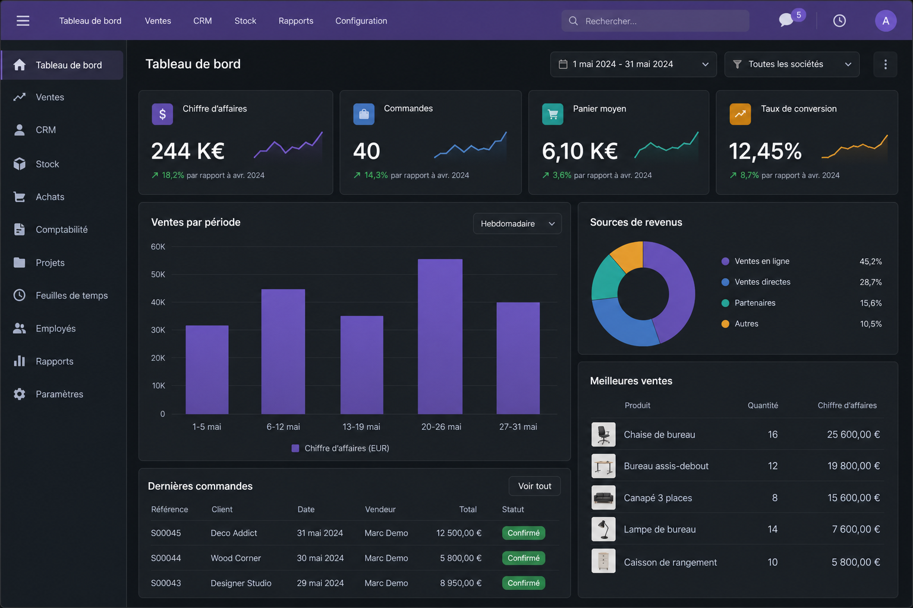

AKREM BI Realtime is a native Business Intelligence application for Odoo 17. Monitor sales, finance, CRM, inventory, purchases, HR and Point of Sale from one interactive cockpit. When a quotation is confirmed, an invoice is posted or a lead is won, your KPIs and charts update automatically in real time — no export, no spreadsheet, no waiting.
By AKREM.KHELIFI — built for managers, sales teams and finance who need clarity every day.
Executive KPIs, trends and period filters on one screen. See what changed today, this week or this month.
100% native data from your models. No external database or ETL required for standard use.
Email rules, PDF executive reports, Excel export and optional AI insights to support your decisions.
Collect, stream, process, analyze, forecast and decide — native Odoo integration, secure PostgreSQL storage, dashboards, KPI alerts, 30-day forecasts and advanced analytics.

A modern, drag-and-drop dashboard with 18+ Chart.js visualizations, 6 visual themes (light, dark, corporate, ocean, sunset, forest), department tabs and a layout you arrange for each role.

Unlike static reports, AKREM BI Realtime listens to your business events through Odoo Bus. Create or validate a sales order, customer invoice, stock move, purchase order or CRM opportunity: affected KPIs refresh without reloading the page.
LIVE badge on the dashboard — your team always works with fresh numbers.
| Department | Examples of KPIs |
|---|---|
| Sales | Revenue, order count, average basket, sales by period |
| CRM | Pipeline, won opportunities, activities |
| Accounting | Invoices, receivables, posted moves |
| Inventory | Stock levels, movements, valuations |
| Purchase | PO volume, supplier performance |
| HR | Headcount and HR indicators |
| Point of Sale | POS sessions and retail performance |
sale.order, account.move).
Optional: set system parameter bi_realtime.ai_api_url to connect Groq or your AI API.
CEOs & managers — daily cockpit, PDF reports for board meetings.
Sales directors — live revenue and pipeline, period filters, team tasks.
CFO & accounting — invoicing KPIs, comparisons, email alerts on thresholds.
Operations — stock and purchase visibility in the same tool as sales.
Developed and maintained by AKREM.KHELIFI.
Documentation and source:
github.com/Akremjs/BI-Realtime
License LGPL-3 — works on Odoo Online, Odoo.sh and On-Premise.
AKREM BI Realtime transforme vos données Odoo en tableaux de bord vivants. Ventes, comptabilité, CRM, stock, achats, RH et point de vente : tout est réuni dans un cockpit moderne. Dès qu'une commande est confirmée, une facture validée ou une opportunité gagnée, vos indicateurs se mettent à jour automatiquement — sans export Excel ni délai.
Collecter, streamer, traiter, analyser, prévoir et décider : intégration Odoo native, stockage sécurisé, tableaux de bord, alertes KPI, prévisions et analyses avancées.
Fini les rapports statiques. Filtres par période, favoris et vue LIVE pour décider chaque jour.
Données 100 % natives. Aucune infrastructure externe obligatoire pour l'usage standard.
Alertes e-mail, rapports PDF, export Excel et assistant IA optionnel pour aller plus loin.
Développé par AKREM.KHELIFI — Dépôt GitHub